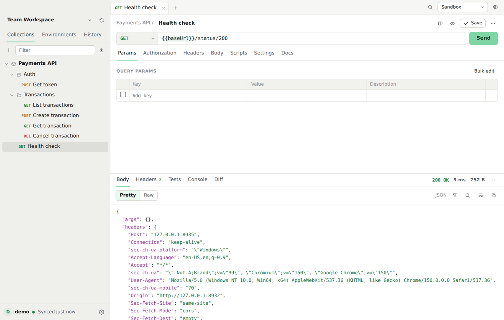
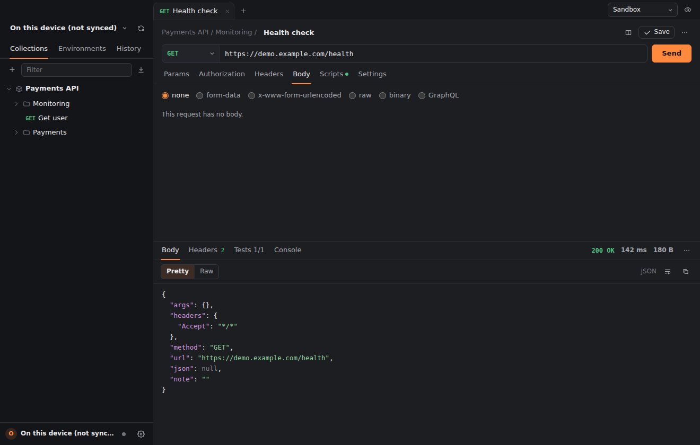
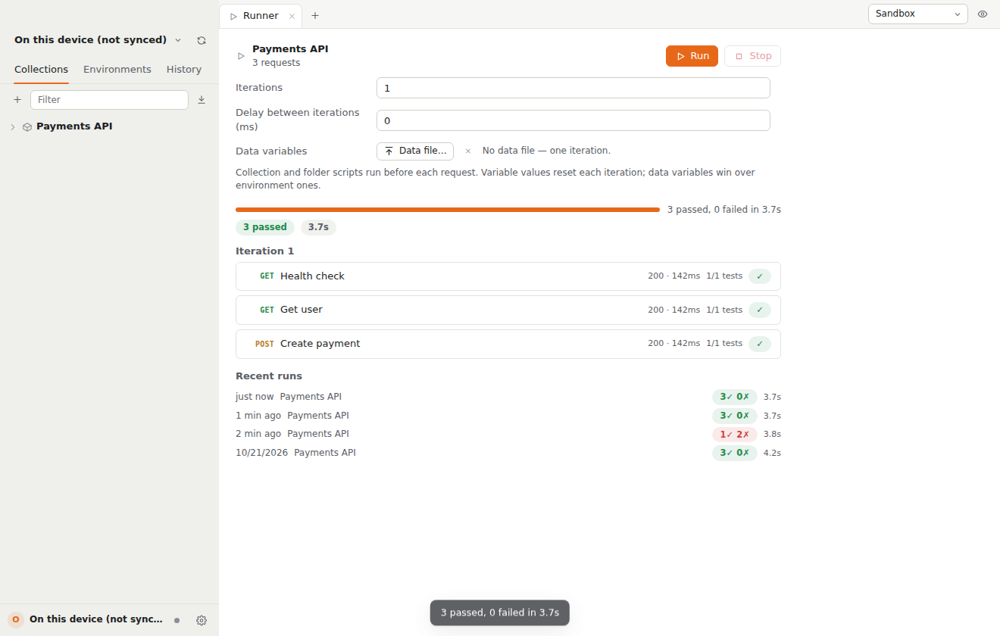

Everything you use Postman for. None of the weight.
Dispatch is a native API client that reads and writes your workspaces, collections and environments through Postman's official API — so your team keeps collaborating in Postman while you work in something much lighter. There's also a built-in local profile, so it runs entirely on this device with no account at all.

A client built for the way you actually test APIs.
Requests are sent from Rust, not a browser — so there are no CORS limits, and the timing panel shows DNS, TCP + TLS, time to first byte and download separately.
WebSocket, SSE & streaming
Open a live ws:// connection and watch frames stream in, send back, close cleanly. SSE and NDJSON responses arrive in an Events tab as they happen.
gRPC, no ceremony
Point at host:port, load services from server reflection or your own .proto files, invoke unary or server-streaming methods with live trailers.
Response diffing
Smart JSON value diffs against saved examples, history or another open tab — paths, additions, removals, changes — with an array-order toggle.
AI assistant, your key
Claude writes post-response tests, explains failures and drafts requests. Your Anthropic key stays in the system keychain; credential headers are sent nowhere.
Load testing
Up to 500 virtual users with ramp-up and an rps cap, streaming live throughput, p50/p95/p99 latency and the most common errors on a per-second chart.
GraphQL with teeth
Schema introspection off the request's own headers, autocomplete as you type, inline errors for unknown fields — plus an explorer for the whole schema.
The parts other clients ship as plugins.
Saving pushes back to Postman; teammates' changes pull in on focus. If a collection changed upstream since your last sync, Dispatch asks before overwriting — and keeps your edits in the tabs either way.
Save any collection as readable files on disk — one JSON per request, names stable across renames. A git pull from a teammate lands the moment Dispatch regains focus.
node dispatch.mjs run <collection> runs environments, globals, data files and the script sandbox from the terminal, with junit/json reporters, bail and secrets from CI variables. Non-zero exit on any failure. OpenAPI, Insomnia and HAR accepted too.
Serve a collection's saved examples on localhost with method/path matching, tie-breaking query parameters, pick-by-header routing, optional delay, open CORS and a live request log. One click points {{baseUrl}} at it.
Secrets live in the system keychain, referenced as {{vault:name}} anywhere. Scripts can't read them, exports keep the placeholder, and a pasted .env imports the lot.
Send the same request against two environments at once and get status, timing, header diffs with always-changing ones set aside, and a value-by-value body diff. Nothing the scripts set is kept.
A UI that gets out of the way.
Native on every platform it targets, with light and dark themes and a command palette (⌘K) that reaches every request, folder, environment and action.


Four steps. No onboarding flow.
Download
Grab the build for macOS, Windows or Linux from the releases page. Auto-update from there is signed and built in.
Sign in — or don't
Add any Postman account as a profile with its own key, or just use the built-in local profile on this device.
Send something
REST, WebSocket, gRPC or GraphQL. Hit ⌘K to search every request, folder, collection and environment.
Wire it into CI
dispatch.mjs run reuses the same runner and script sandbox in any pipeline, with junit/json reports.
One download. Your entire API surface.
Native builds for macOS 13+, Windows 10/11 and Linux (x86_64 glibc). Auto-updates are signed, checked daily, and apply in one click.